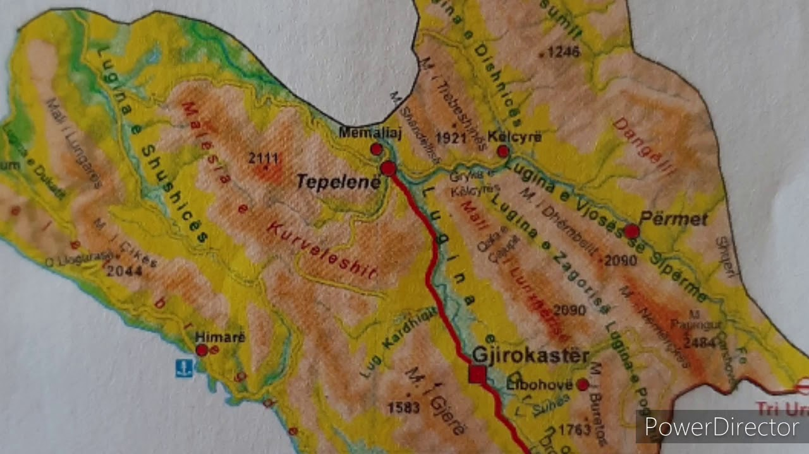
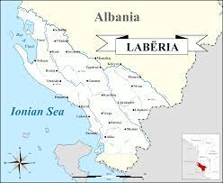
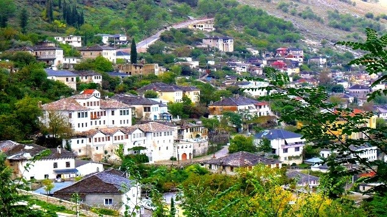
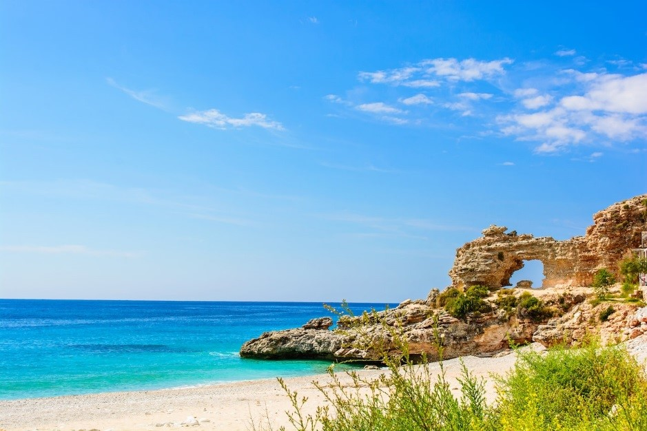
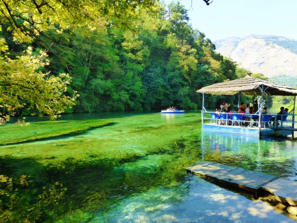
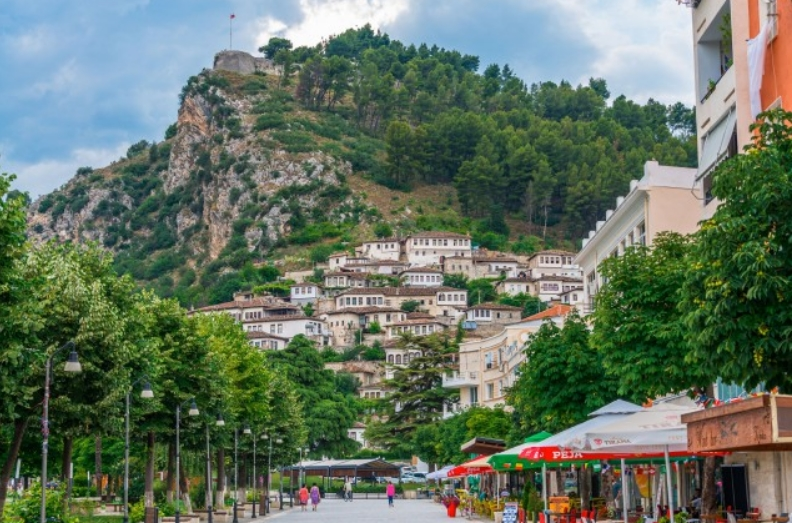

SHQIPËRIA JUGORE
POZITA GJEOGRAFIKE:


- Rajoni Jugor shtrihet në jug të vendit dhe ka dalje të gjerë në detin Jon.
- Kushtëzon tiparet më të shprehura mesdhetare të klimës, të hidrografisë, të tokave dhe të bimësisë.
- Eshtë shumë e përshtatshme për zhvillimin ekonomik, sepse rajoni lidhet me rrugë me rajonet e tjera të vendit dhe,
nëpërmjet tri pikave të kalimit kufitar e dy porteve detare, lidhet me Greqinë dhe me vendet e tjera të botës.
- Eshtë parashikuar që rruga Hani i Hotit-Kakavijë të kthehet në një korridor turistik, duke e bërë rajonin pjesë të tureve
të mëdha turistike përreth Mesdheut.
KUSHTET NATYRORE:
Rajoni Jugor ka ndërtim gjeologjik dhe reliev më të thjeshtë se rajonet e tjera malore të vendit. Në të ndërthuren vargjet malore të përbëra
nga gëlqerorë, me luginat e përbëra nga terrigjenë. Me këto formacione gjeologjike lidhen pasuritë minerare: nafta, qymyrguri, fosforitet etj. Relievi shtrihet nga
niveli i detit deri në 2465 (Nemërçkë). Përbëhet nga këto njësi:
- 1. MALESIA MIDIS TOMORIT DHE MELESINIT, QË SHTRIHET NË VERILINDJE TË RAJONIT: Malet e saj kryesore janë: mali i Tomorit
(2415 m), me forma karstike e akullnajore; mali i Kulmakut, Miçanit dhe malësia e Dangëllisë, me reliev të copëtuar nga erozioni; mali i Postenanit dhe
i Melesinit.
- 2. VARGJET MALORE MIDIS VJOSËS SË SIPËRME DHE DRINOSIT, TË CILAT PËRBËHEN NGA VARGU MALOR TREBESHINË
- 3. DHËMBEL - NEMËRCKË DHE SHËNDËLLI - LUNXHERI - BURETO.
- 4. MALËSIA E KURVELESHIT DHE VARGU MALI I GJERË - STUGARË, që shtrihen midis luginës së Drinosit dhe të Shushicës.
Malësia e Kurveleshit rrethohet nga shpate të thepisura, kurse pjesa e saj e sipërme përbën një pllajë të valëzuar, ku janë vendosur qendrat e banuara.
- 5. MALET BREGDETARE, TË CILAT SHTRIHEN MIDIS BREGDETIT JONIAN DHE LUGINËS SË SHUSHICËS. Midis këtyre kurrizeve ndodhet
lugina e Dukatit. Ato bashkohen në qafën e Llogorasë (1050 m), ku kalon rruga që lidh Vlorën me Sarandën.
- 6. LUGINA E VJOSËS, e cila është më e madhja. Deri në Këlcyrë është e gjerë dhe ka disa fusha. Lugina ngushtohet në grykën
e famshme të Këlcyrës.
- 7. LUGINA E DRINOSIT, ku në pjesën e sipërme gjendet fusha krejt e rrafshët e Gjirokastrës, rreth 10 e gjerë dhe me toka
pjellore.
- 8. FUSHEGROPA E DELVINËS, e formuar nga fundosje tektonike, që shtrihet në jug të rajonit. Fushat e saj janë të rrafshëta.
Kënetat e moçalet e shumta u bonifikuan në vitet '70 të shek. XX.
KLIMA:
Eshtë tipike mesdhetare, me dimër më të butë e të lagësht dhe verë më të nxehtë e më të thatë në Shqipëri. Dëbora është shumë e rrallë në
Rivierën Shqiptare dhe në fushëgropën e Delvinës.
HIDROGRAFIA:
Përbëhet nga lumi i Vjosës, Osumit, Kalasës, Bistricës dhe Pavllës, laguna e kripur e Butrintit, burimet etj. Lumenjtë kanë regjim mesdhetar
(prurje të mëdha në dimër, të vogla në verë).
BIMESIA:
Eshtë mesdhetare. Përbëhet kryesisht nga shkurret me gjelbërim të përhershëm, dushqet dhe halorët mesdhetarë. Nga fauna dallohen: ariu,
kaprolli, derri i egër, shqiponja etj.
Rajoni Jugor ka perspektivë shumë të mirë zhvillimi. Lidhet me pozitën gjeografike, pasuritë e mëdha natyrore, me rrugët e rëndësishme automobilistike e detare,
që e lidhin me rajonet e tjera të vendit dhe drejt Greqisë etj. Gjithashtu dhe me mundësitë e mëdha të integrimit ndërrajonal brenda dhe jashtë vendit. Duhen politika
dhe strategji të studiuara zhvillimi, që të krijojnë kushte të mira jetese në rajon, që të mos vazhdojë largimi i njerëzve dhe të kthehen migrantët. Këto politika, së
bashku me nivelin e lartë të arsimimit dhe të kualifikimit të popullsisë, do të krijojnë kushte për zhvillimin e shpejtë e të qëndrueshëm të Rajonit Jugor.



